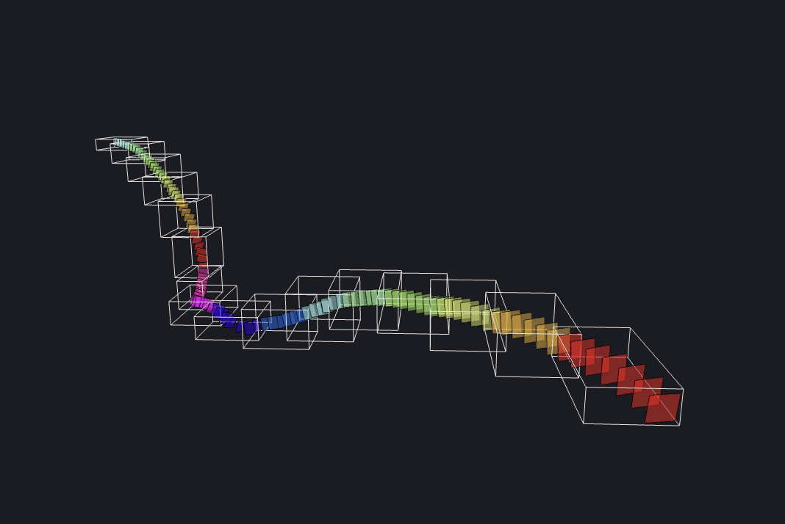

Slicing

Slicing is one of the primary features of Ouroboros, available in the CLI and the desktop app.
Using the Slice Page
Basic Usage Demo

Reusing Options from a Previous Run

Slicing Options
üìÅ - Drag and drop files from File Explorer panel into this option.
- üìÅ
Neuroglancer JSON- Path to the Neuroglancer configuration JSON file (exported from Neuroglancer with{}icon, or through the Neuroglancer Plugin) Neuroglancer Image Layer- Select Neuroglancer image layer to slice from.Neuroglancer Annotation Layer- Select Neuroglancer annotation layer to slice from.Slice Width- The output width of each slice image.Slice Height- The output height of each slice image.- üìÅ
Output File Folder- The folder to save all the resulting files into. Output File Name- Base name for all output files.Annotation MIP Level- The annotation layer's MIP level. 0 is the highest resolution.Output MIP Level- The MIP level to output slices in (essentially a downsample option). 1 is a good starting point.Slicing ParametersDistance Between Slices- The distance between each slice along the annotation path.Use Adaptive Slicing- Rather than just using equidistant slices, add more slices in more curved areas.Adaptive Slicing Ratio- 1 indicates to consider distance and curvature equally, 0.5 is biased towards distance, and 2 is biased towards curvature.
Output Single File- Whether to output one tiff stack file or a folder of files.Bounding Box ParametersMax Depth- The maximum depth for binary space partitioning. It is not recommended to change this option unless you encounter RAM issues.Target Slices Per Box- If you are running on a low-RAM system, or you are taking very large slices, you may want to decrease this.
Max RAM (GB)- 0 indicates no RAM limit. Setting a RAM limit allows Ouroboros to optimize performance and avoid overusing RAM.
How Does Slicing Work?
Spline Fitting
Ouroboros fits a spline curve to the annotation path from the Neuroglancer JSON file. This produces a smooth, differentiable curve along the length of the annotations.
If the line segments between annotation points were used, then there would could be highly discontinuous slice transitions around sharp corners.
Slice Coordinate Frames
Ouroboros calculates equidistant points along the spline curve. Each point is "1" apart from the previous to match the appearance of isotropic slices taken from one of the axes of the coordinate space of the full volume (the coordinate space of the annotation points).
To follow any possible path, each point must have its own coordinate frame normal to the spline. For easier segmentation, it is also important that the axes of the point coordinate frames don't flip between points.
To achieve this, Ouroboros calculates rotation-minimizing frames based on the change in orientation of the tangent vectors of adjacent points.
Rectangles and Grids
Ouroboros calculates the corners of the slice rectangle at using each point and its associated coordinate axes (as vectors).
Pseudocode
width_vector # 'u' unit vector scaled to slice width / 2
height_vector # 'v' unit vector scaled to slice height / 2
top_left = point - width_vector + height_vector
top_right = point + width_vector + height_vector
bottom_right = point + width_vector - height_vector
bottom_left = point - width_vector - height_vector
Then, for each point, a 2D grid is generated with given dimensions (slice width and height). Each point in the 2D grid is a 3D point which is calculated by interpolating between the four corner points.
Volumes and Trilinear Interpolation
At this point, Ouroboros has a full grid of 3D points associated with each slice, but has yet to download any data from the cloud-hosted volume.
To avoid downloading unnecessary data, Ouroboros employs binary space partitioning to divide the minimum bounding box of the ROI recursively until each volume contains few enough slices to fit into available RAM.
Ouroboros then downloads the data for each of these bounding boxes from the cloud-hosted volume. As each download completes, a new process is spawned to handle calculations.
For each volume, scipy.ndimage.map_coordinates is used to extract the values at the coordinates of the slice grids from the 3D volume using trilinear interpolation.
Each of these slices are saved as local tiff images and are later combined into a single output tiff.